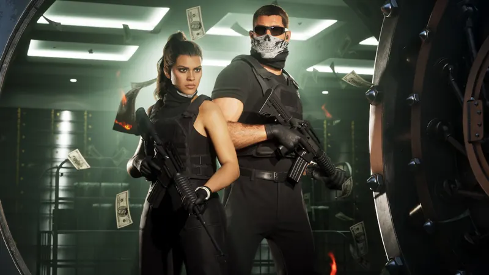

¿Cuántos trofeos y logros tiene GTA 6? Lista y Platino
Respuesta corta
Según GTABase, hay 55 trofeos en PS5 y 55 logros en Xbox, con un Platino llamado «Vice Got a Price!». Varias webs atribuyen esa cifra a una filtración de datos y no hemos encontrado una lista publicada por Rockstar.

Lo que dicen las fuentes
- PS5: 55 trofeos: 1 Platino, 2 de oro, 6 de plata y 46 de bronce.
- Xbox Series X|S: 55 logros que suman 1.000 de Gamerscore. El Platino de PlayStation equivale a un logro «Mythic» que no da puntos.
- Platino: se llama «Vice Got a Price!» y se consigue al desbloquear todos los demás.
Estos datos son de la guía de GTABase, actualizada el 18 de noviembre de 2026. Según esa guía, 28 de los trofeos y logros son ocultos. El 20 de noviembre comprobamos que la guía no había cambiado.
Lo que no está confirmado
Notebookcheck e Insider Gaming recogieron la cifra de 55 como una filtración de datos del juego, y la propia guía de GTABase marca como «no confirmados» los pasos exactos de varios logros. No hemos encontrado una lista oficial publicada por Rockstar, así que el total y los nombres pueden cambiar.
Trucos y trofeos
Según GTABase, usar trucos desactiva los trofeos y logros. Mira cómo se desbloquean en trucos de GTA 6.
Fuentes
- GTABase: guía de trofeos y logros de GTA 6 (actualizada el 18-11-2026)
- Notebookcheck: la filtración de trofeos y logros
- Insider Gaming: 55 trofeos y logros
Resumen redactado por 6 Estrellas a partir de las fuentes citadas, revisadas el 20 de noviembre de 2026. Si ves un error, cuéntanoslo desde Quiénes somos.